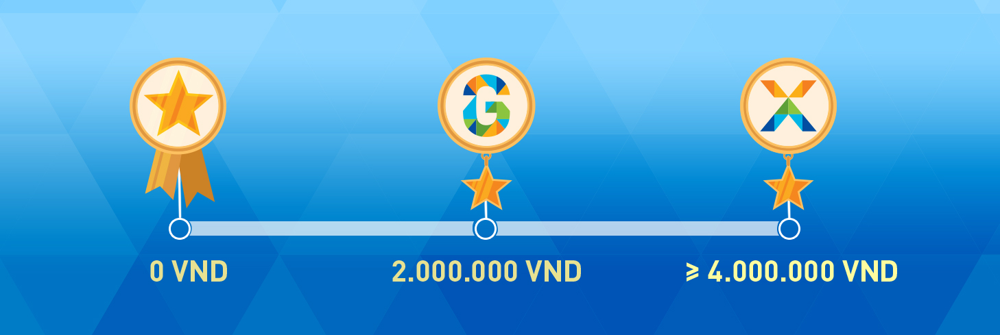

Thể Lệ Chương Trình Khách Hàng Thân Thiết Galaxy
Chương trình khách hàng thân thiết Galaxy là chương trình ưu đãi dựa trên điểm tích lũy của các thành viên gồm Star, G-Star, X-Star. Với mỗi giao dịch tại hệ thống rạp Galaxy, bạn sẽ nhận được điểm thưởng tương ứng. Hình thức tích lũy như sau:
Hình thức tích lũy như sau:
- Star: Tích lũy ở mức 3% trên tổng giá trị/số tiền giao dịch
- G-Star: Tích lũy ở mức 5% trên tổng giá trị/số tiền giao dịch
- X-Star: Tích lũy ở mức 10% trên tổng giá trị/số tiền giao dịch
Điểm tích lũy được gọi là Stars.
Ví dụ: Khách hàng là thành viên hạng Star, khi phát sinh giao dịch 200.000 đồng, được tích điểm ở mức 3% tương đương 6 Stars (6 Điểm).
Cách làm tròn điểm thưởng như sau:
- Từ 0.1 đến 0.4: làm tròn xuống (Ví dụ: 3.2 điểm sẽ được tích vào tài khoản 3 điểm)
- Từ 0.5 đến 0.9: làm tròn lên (Ví dụ: 3.5 điểm sẽ được tích vào tài khoản 4 điểm)
1 điểm tích lũy sẽ được quy đổi thành 1.000 đồng và được sử dụng cho việc thanh toán vé/bắp nước tại hệ thống Galaxy Cinema. Điểm tích lũy không có giá trị quy đổi thành tiền mặt hoặc hoàn lại khi giao dịch đã được ghi nhận thành công.
Cấp độ thành viên:
 Hình thức tích lũy như sau:
- Star: Thành viên thân thiết có tổng chi tiêu trong năm dưới 2,000,000 đồng (tính từ ngày 1/1 - 31/12).
- G-Star: Thành viên thân thiết có tổng chi tiêu trong năm từ 2,000,000 đồng đến 3,999,999 đồng (tính từ ngày 1/1 - 31/12).
- X-Star: Thành viên thân thiết có tổng chi tiêu từ 4,000,000 đồng trở lên (tính từ ngày 1/1 - 31/12).
Lưu ý:
- Thông tin định danh thành viên gồm có email và số điện thoại bắt buộc phải hợp lệ.
- Email không hợp lệ là email không có thực tại thời điểm Galaxy Cinema rà soát dữ liệu thành viên.
- Số điện thoại không hợp lệ là số điện thoại không liên lạc được hoặc không thuộc sở hữu của chủ tài khoản thành viên ở thời điểm rà soát.
- Với các trường hợp không hợp lệ, Galaxy Cinema có quyền xóa tài khoản thành viên mà không cần thông báo trước.
- Tài khoản thành viên không có đủ thông tin định danh gồm email và số điện thoại hợp lệ cũng có thể bị xóa mà không cần thông báo.
Điểm tích lũy có giá trị áp dụng tại tất cả các rạp Galaxy Cinema trên toàn quốc và có thời hạn sử dụng là 01 năm.
Bạn có thể dễ dàng kiểm tra điểm tích lũy của mình trên Website Galaxy Cinema hoặc Ứng dụng GLX trên điện thoại (Mobile App).